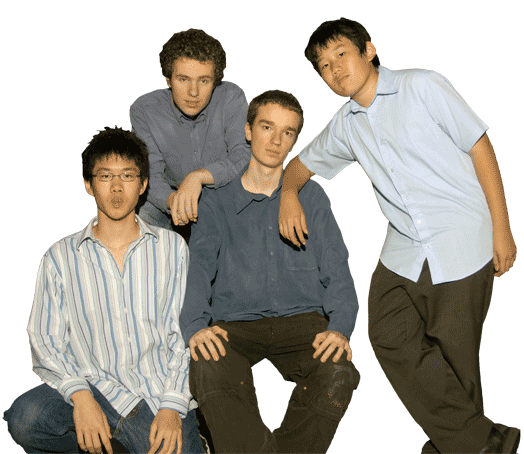
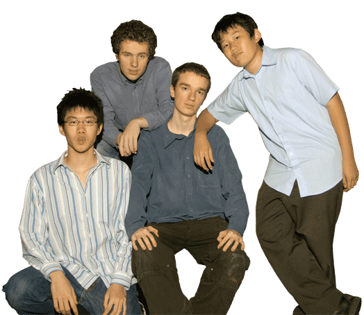

インフォ
Cokespill は2005年に東京で集まった男性4人編成のバンドです。 TBC （東京バプテスト教会）の青年バンドからできたものです。この4人は兄弟2セット：David（ギター） & Jonny（ベース） Somers-Harris (サマーズ・ハリス ディビッド & ジョニー) とJeremy（キーボード） & Matthew（ドラム） Auw (アウ ジェレミー & マッシュー)

Cokespill は2005年に東京で集まった男性4人編成のバンドです。 TBC （東京バプテスト教会）の青年バンドからできたものです。この4人は兄弟2セット：David（ギター） & Jonny（ベース） Somers-Harris (サマーズ・ハリス ディビッド & ジョニー) とJeremy（キーボード） & Matthew（ドラム） Auw (アウ ジェレミー & マッシュー)
